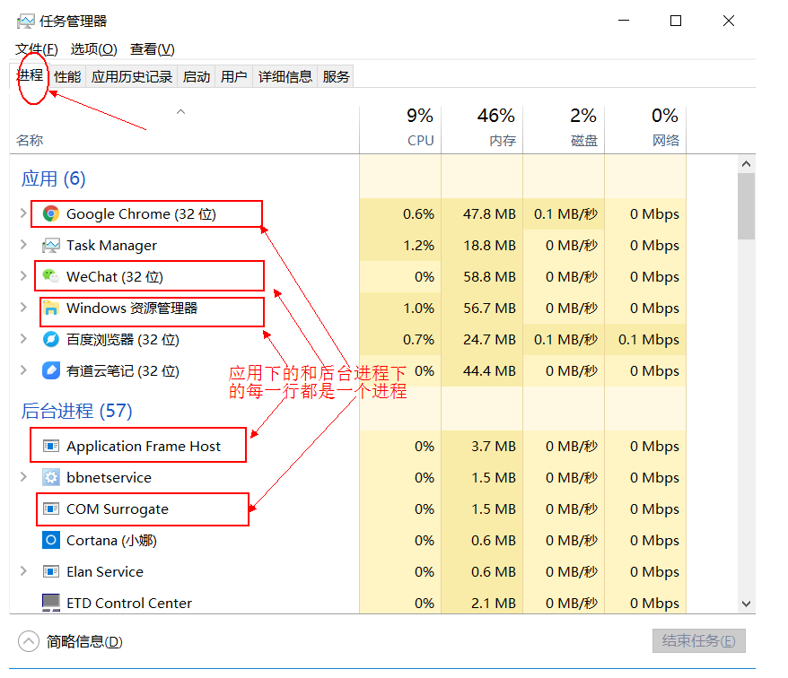
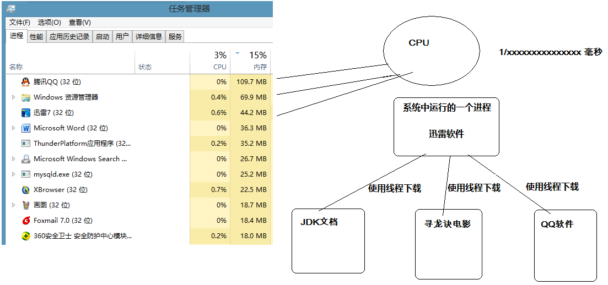
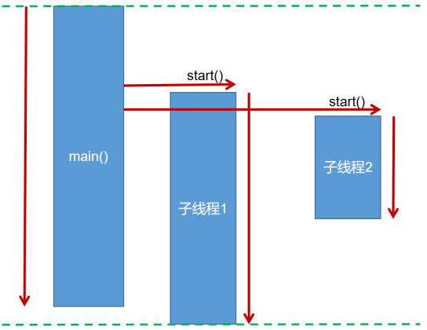
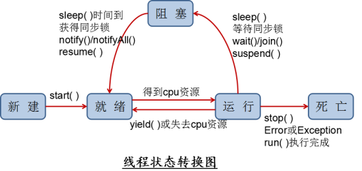
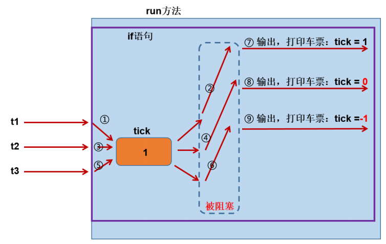
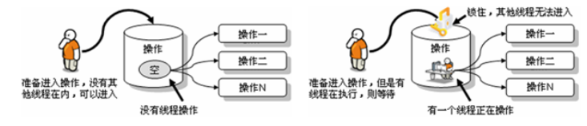

线程的相关概念¶
1.并发与并行¶
- 并行（parallel）：指多个事件任务在同一时刻发生（同时发生）。指在同一时刻，有多条指令在 多个处理器上同时执行。单核CPU同一时刻只能处理一条指令，所以单核CPU做不到并行处理。
- 并发（concurrency）：指两个或多个事件在同一个微小的时间段内发生。指在同一个时刻只能有 一条指令执行，但多个进程的指令被快速轮换执行，使得在宏观上具有多个进程同时执行的效果。 程序并发执行可以在有限条件下，充分利用CPU资源，这是我们研究的重点。

在操作系统中，安装了多个程序，并发指的是在一段时间内宏观上有多个程序同时运行，这在单 CPU系统中，每一时刻只能有一个程序执行，即微观上这些程序是分时的交替运行，只不过是给人的感觉是同时运行，那是因为分时交替运行的时间是非常短的。
而在多个 CPU 系统中，则这些可以并发执行的程序便可以分配到多个处理器上（CPU），实现多任务并行执行，即利用每个处理器来处理一个可以并发执行的程序，这样多个程序便可以同时执行。目前电脑市场上说的多核 CPU，便是多核处理器，核越多，并行处理的程序越多，能大大的提高电脑运行的效率。
注意：单核处理器的计算机肯定是不能并行的处理多个任务的，只能是多个任务在单个CPU上并发运行。同理，线程也是一样的，从宏观角度上理解线程是并行运行的，但是从微观角度上分析却是串行运行的，即一个线程一个线程的去运行，当系统只有一个CPU时，线程会以某种顺序执行多个线程，我们把这种情况称之为线程调度。
- 单核CPU：只能并发
- 多核CPU：并行+并发
并行与并发举例：
- 并行：多项工作一起执行，之后再汇总，例如：泡方便面，电水壶烧水，一边撕调料倒入桶中
- 并发：同一时刻多个线程在访问同一个资源，多个线程对一个点，例如：春运抢票、电商秒杀...
2. 线程与进程¶
- 程序：为了完成某个任务和功能，选择一种编程语言编写的一组指令的集合。
- 软件：1个或多个应用程序+相关的素材和资源文件等构成一个软件系统。
- 进程：进程是对一个程序运行过程（创建-运行-消亡）的描述，系统会为每个运行的程序建立一个进程，并为进程分配独立的系统资源（以一个进程为单元分配系统资源），比如内存空间等资源。
- 线程：线程是进程中的一个执行单元，负责完成执行当前程序的任务，一个进程中至少有一个线程。一个进程中是可以有多个线程的，这个应用程序也可以称之为多线程程序。多线程使得程序可以并发执行，充分利用CPU资源。
面试题：进程是操作系统调度和分配资源的最小单位，线程是CPU调度的最小单位。不同的进程之间是不共享内存的。进程之间的数据交换和通信的成本是很高。不同的线程是共享同一个进程的内存的。当然不同的线程也有自己独立的内存空间。对于方法区，堆中中的同一个对象的内存，线程之间是可以共享的，但是栈的局部变量永远是独立的。
2.1 举例说明¶
我们可以再电脑底部任务栏，右键----->打开任务管理器,可以查看当前任务的进程：

一个应用程序的多次运行，就是多个进程

一个进程中包含多个线程

2.2 多线程的优点与应用场景¶
主要优点：充分利用CUP空闲时间片，用尽可能短的时间完成用户的请求。也就是使程序的响应速度更快 。
应用场景：
- 多任务处理。多个用户请求服务器，服务端程序可以开启多个线程分别处理每个用户的请 求，互不影响。
- 单个大任务处理。下载一个大文件，可以开启多个线程一起下载，减少整体下载时间。
3. 线程调度¶
指CPU资源如何分配给不同的线程。常见的两种线程调度方式：
- 分时调度：所有线程轮流使用 CPU 的使用权，平均分配每个线程占用 CPU 的时间。
- 抢占式调度：优先让优先级高的线程使用 CPU，如果线程的优先级相同，那么会随机选择一个(线程随机性)，Java采用的是抢占式调度方式。
3.1 抢占式调度详解¶
大部分操作系统都支持多进程并发运行，现在的操作系统几乎都支持同时运行多个程序。比如：现在我们上课一边使用编辑器，一边使用录屏软件，同时还开着画图板，dos窗口等软件。此时，这些程序是在同时运行，”感觉这些软件好像在同一时刻运行着“。
实际上，CPU(中央处理器)使用抢占式调度模式在多个线程间进行着高速的切换。对于CPU的一个核而言，某个时刻，只能执行一个线程，而 CPU的在多个线程间切换速度相对我们的感觉要快，看上去就是在同一时刻运行。 其实，多线程程序并不能提高程序的运行速度，但能够提高程序运行效率，让CPU的使用率更高。

4. Java线程的创建¶
在Java中，万物皆对象，当然线程也为对象之一
4.1 创建与启动¶
java虚拟机是支持多线程的，当运行Java程序时，至少已经有一个线程了，那就是main线程。

创建线程的简单方式有两种
-
继承Thread类
-
实现Runnable接口
启动线程的方式有两种
- 继承了Thread类的子类调用
.start()方法。 - 实现了Runnable接口的类传入 新建的Thread对象，让Thread对象调用
.start()方法即可。

注意事项：
- 手动调用run方法不是启动线程的方式，只是普通方法调用。
- start方法启动线程后，run方法会由JVM调用执行。
- 不要重复启动同一个线程，否则抛出异常 IllegalThreadStateException
- 不要使用Junit单元测试多线程，不支持，主线程结束后会调用 System.exit() 直接退出JVM;
4.1.1 继承Thread类¶
Java中 java.lang.Thread 是表示线程的类，每个Thread类或其子类的实例代表一个线程对象。
通过继承Thread类来创建并启动多线程的步骤:
- 定义Thread类的子类，并重写该类的run()方法，该run()方法的方法体就代表了线程需要完成的任 务,因此把run()方法称为线程执行体。
- 创建Thread子类的实例，即创建了线程对象
- 调用线程对象的start()方法来启动该线程
自定义线程类：
public class MyThread extends Thread {
//定义指定线程名称的构造方法
public MyThread(String name) {
//调用父类的String参数的构造方法，指定线程的名称
super(name);
}
/**
* 重写run方法，完成该线程执行的逻辑
*/
@Override
public void run() {
for (int i = 0; i < 10; i++) {
System.out.println(getName()+"：正在执行！"+i);
}
}
}
// 测试类
public class Demo01 {
public static void main(String[] args) {
//创建自定义线程对象
MyThread mt = new MyThread("新的线程！");
//开启新线程
mt.start();
//在主方法中执行for循环
for (int i = 0; i < 10; i++) {
System.out.println("main线程！"+i);
}
}
}
4.1.2 实现Runnable接口¶
Java有单继承的限制，若想要实现多个线程的多样性，可用核心类库中的Runnable接口：我们可以实现Runnable接口，重写run()方法，然后再通过Thread类的对象代理启动和执行我们的线程体run()方法
通过实现Runnable接口创建线程并启动的步骤:
- 定义Runnable接口的实现类，并重写该接口的run()方法，该run()方法的方法体同样是该线程的线 程执行体。
- 创建Runnable实现类的实例，并以此实例作为Thread的target来创建Thread对象，该Thread对 象才是真正 的线程对象。
- 调用线程对象的start()方法来启动线程。
自定义线程任务类：
public class MyRunnable implements Runnable{ // 继承Runnable接口
// 重写Runnable接口
@Override
public void run() {
for (int i = 0; i < 20; i++) {
System.out.println(Thread.currentThread().getName()+" "+i);
}
}
}
// 测试类
public class Demo {
public static void main(String[] args) {
//创建自定义类对象 线程任务对象
MyRunnable mr = new MyRunnable();
//创建线程对象 第二个参数为线程名称
Thread t = new Thread(mr, "小强");
t.start();
for (int i = 0; i < 20; i++) {
System.out.println("旺财 " + i);
}
}
}
4.1.3 匿名内部类对象创建线程¶
匿名内部类对象的方式创建线程，并不是一种新的创建线程的方式，只是在线程任务只需执行一次的情况下，无需单独创建线程类，可以采用匿名对象的方式：
// 直接使用 Thread类
new Thread("新的线程！"){
@Override
public void run() {
for (int i = 0; i < 10; i++) {
System.out.println(getName()+"：正在执行！"+i);
}
}
}.start();
// 实现Runnable，传入Thread
new Thread(new Runnable(){
@Override
public void run() {
for (int i = 0; i < 10; i++) {
System.out.println(Thread.currentThread().getName()+"：" + i);
}
}
}).start();
依旧使用 start() 启动线程
4.1.4 实现Callable接口¶
4.2 Thread类与Runnable接口的比较¶
- 由于Java“单继承，多实现”的特性，Runnable接⼝使⽤起来⽐Thread更灵活。
- Runnable接⼝出现更符合⾯向对象，将线程单独进⾏对象的封装。
- Runnable接⼝出现，降低了线程对象和线程任务的耦合性。
- 如果使⽤线程时不需要使⽤Thread类的诸多⽅法，显然使⽤Runnable接⼝更为轻量。
优先使⽤“实现 Runnable 接口” 这种⽅式来⾃定义线程类。
5. Thread类¶
5.1 构造方法¶
| 方法名称 | 方法描述 |
|---|---|
| public Thread() | 分配一个新的线程对象。 |
| public Thread(String name) | 分配一个指定名字的新的线程对象。 |
| public Thread(Runnable target) | 分配一个带有指定目标新的线程对象。 |
| public Thread(Runnable target,String name) | 分配一个带有指定目标新的线程对象并指定名字。 |
5.2 线程使用基础方法¶
| 方法名称 | 方法描述 |
|---|---|
| public void run() | 此线程要执行的任务在此处定义代码。 |
| public String getName() | 获取当前线程名称。 |
| public static Thread currentThread() | 返回对当前正在执行的线程对象的引用。 |
| public final boolean isAlive() | 测试线程是否处于活动状态。如果线程已经启动且尚未终止，则为活动状态。 |
| public final int getPriority() | 返回线程优先级 |
| public final void setPriority(int newPriority) | 改变线程的优先级 |
关于优先级的说明
每个线程都有一定的优先级，优先级高的线程将获得较多的执行机会。每个线程默认的优先级都与创建它的父线程具有相同的优先级。Thread类提供了setPriority(int newPriority)和getPriority()方法类设置和获取线程的优先级，其中setPriority方法需要一个整数，并且范围在[1,10]之间，通常推荐设置Thread类的三个优先级常量：
- MAX_PRIORITY（10）：最高优先级
- MIN _PRIORITY （1）：最低优先级
- NORM_PRIORITY （5）：普通优先级，默认情况下main线程具有普通优先级。
优先级示例代码
public static void main(String[] args) {
Thread t = new Thread(){
public void run(){
System.out.println(getName() + "的优先级：" + getPriority());
}
};
t.setPriority(Thread.MAX_PRIORITY);
t.start();
System.out.println(Thread.currentThread().getName()+"的优先级：" +Thread.currentThread().getPriority());
}
5.3 线程控制常见方法¶
在线程启动之后可以对线程进行一些干扰（控制）的方法
| 方法名称 | 方法描述 |
|---|---|
| public void start() | 导致此线程开始执行; Java虚拟机调用此线程的run方法。 |
| public static void sleep(long millis) | 线程睡眠，使当前正在执行的线程以指定的毫秒数暂停（暂时停止执行）。 |
| public static void yield() | 线程（挂起）礼让，yield只是让当前线程暂时失去执行权，让系统的线程调度器重新调度一次，希望优先级与当前线程相同或更高的其他线程能够获得执行机会，但是这个不能保证，完全有可能的情况是，当某个线程调用了yield方法暂停之后，线程调度器又将其调度出来重新执行。（该线程将CPU资源释放，加入争取队列重新争取） |
| void join() | 加入线程，当前线程中加入一个新线程，等待加入的线程终止后再继续执行当前线程。（可以理解为强行加塞） |
| void join(long millis) | 等待该线程终止的时间最长为 millis 毫秒。如果millis时间到，将不再等待。 |
| void join(long millis, int nanos) | 等待该线程终止的时间最长为 millis 毫秒 + nanos 纳秒。 |
| public final void |
强迫线程停止执行。 该方法具有不安全性，已被弃用，最好不要使用。 |
| public void interrupt() | 中断线程，实际上是给线程打上一个中断的标记，并不会真正使线程停止执行。 |
| public boolean isInterrupted() | 检查线程是否中断，实际上检查线程是否有中断标记，如果有自己编写代码使此线程停止。 |
| public void setDaemon(boolean on) | 将线程设置为守护线程或用户线程。必须在线程启动之前设置，否则会报 IllegalThreadStateException 异常。守护线程，主要为其他线程服务，当程序中没有非守护线程执行时，守护线程也将终止执行。JVM垃圾回收器也是守护线程。 在某个线程 t1 内，将一个线程 t2 设置为守护线程，则该线程 t1 结束后 t2 线程也会随之结束 |
| public boolean isDaemon() | 检查当前线程是否为守护线程。 |
注意点：
调用 stop() 方法会立刻停止 run() 方法中剩余的全部工作，包括在 catch 或 finally 语句中的，并抛出ThreadDeath异常(通常情况下此异常不需要显示的捕获)，因此可能会导致一些清理性的工作的得不到完成，如文件，数据库等的关闭。
调用 stop() 方法会立即释放该线程所持有的所有的锁，导致数据得不到同步，出现数据不一致的问题。
5.4 代码示例¶
5.4.1 强行加塞：join()方法¶
public class JoinTest {
public static void main(String[] args) throws InterruptedException {
JoinClass t1 = new JoinClass();
t1.start();
// 当主线程执行到5时,让 t1 线程强行加塞
for (int i = 0; i < 10; i++) {
try {
Thread.sleep(100);
System.out.println("main线程: i = " + i);
if (i == 5) {
// 强行加塞
t1.join(5000);
}
} catch (InterruptedException e) {
e.printStackTrace();
}
}
}
}
class JoinClass extends Thread {
@Override
public void run() {
for (int i = 0; i < 10; i++) {
try {
Thread.sleep(200);
System.out.println("Join进来的线程: i = " + i);
} catch (InterruptedException e) {
e.printStackTrace();
}
}
}
}
/*执行结果
main线程: i = 0
Join进来的线程: i = 0
main线程: i = 1
main线程: i = 2
Join进来的线程: i = 1
main线程: i = 3
main线程: i = 4
Join进来的线程: i = 2
main线程: i = 5
Join进来的线程: i = 3 // 在这里，t1线程执行join()方法
Join进来的线程: i = 4
Join进来的线程: i = 5
Join进来的线程: i = 6
Join进来的线程: i = 7
Join进来的线程: i = 8
Join进来的线程: i = 9
main线程: i = 6
main线程: i = 7
main线程: i = 8
main线程: i = 9
*/
5.4.2 中断操作：interrupt()方法¶
public class InterruptTest {
public static void main(String[] args) throws InterruptedException {
MyClass t1 = new MyClass();
t1.start();
Thread.sleep(50);
t1.interrupt();
System.out.println("已执行中断操作");
}
}
class MyClass extends Thread {
@Override
public void run() {
for (int i = 0; i < 555555555; i++) {
int j = 100;
if (Thread.currentThread().isInterrupted()) {
System.out.println("i = " + i);
System.out.println(Thread.currentThread().getName() + "线程已中断");
break;
}
}
}
}
/*执行结果：
已执行中断操作
i = 37811162
Thread-0线程已中断
*/
5.4.3 设置守护线程：setDaemon(true)¶
public class DaemonTest {
public static void main(String[] args) throws InterruptedException {
DaemonClass t1 = new DaemonClass();
t1.setDaemon(true);
t1.start();
TimeUnit.SECONDS.sleep(1);
System.out.println("主线程Over");
}
}
class DaemonClass extends Thread {
@Override
public void run() {
for (int i = 0; i < 10; i++) {
System.out.println("守护线程的i：" + i);
try {
Thread.currentThread().sleep(300);
} catch (InterruptedException e) {
e.printStackTrace();
}
}
}
}
/*执行结果
守护线程的i：0
守护线程的i：1
守护线程的i：2
守护线程的i：3
主线程Over
*/
5.4.4 小案例：龟兔赛跑¶
/**
* @author: LeoNardo
* @date: 2020/9/18 - 10:52
*/
public class RabbitGuiRun {
public static void main(String[] args) {
Racer wuGui = new Racer("乌龟", 50, 100, 0);
Racer rabbit = new Racer("兔子", 50, 10, 1300);
// 启动两个线程
wuGui.start();
rabbit.start();
// 使两个线程执行完毕再执行主线程
try {
wuGui.join();
rabbit.join();
} catch (Exception e) {
}
// 比较乌龟与兔子的用时
if (wuGui.getTotalTime() < rabbit.getTotalTime()) {
System.out.println("乌龟赢了!");
} else if (wuGui.getTotalTime() > rabbit.getTotalTime()) {
System.out.println("兔子赢了!");
} else {
System.out.println("双方打平手!!!");
}
}
}
class Racer extends Thread {
private String kind;
private Integer distance;
private Integer runTime; // 每米所需时间
private Integer restTime; // 休息时间
private long totalTime; // 花费的时间
public Racer(String kind, Integer distance, Integer runTime, Integer restTime) {
this.kind = kind;
this.distance = distance;
this.runTime = runTime;
this.restTime = restTime;
}
@Override
public void run() {
int sum = 0;
long startTime = System.currentTimeMillis();
while (sum < distance) {
try {
Thread.sleep(runTime);
} catch (InterruptedException e) {
}
sum++;
if (sum % 10 == 0 && sum < distance) {
System.out.println(kind + "跑了" + sum + "米,需要休息" + ((double)restTime / 1000) + "秒");
try {
Thread.sleep(restTime);
} catch (Exception e) {
}
}
}
long endTime = System.currentTimeMillis();
totalTime = endTime - startTime;
System.out.println(kind + "跑到了终点,用时" + (double)totalTime/1000);
}
public long getTotalTime() {
return totalTime;
}
}
6. 线程的生命周期¶
6.1 传统线程模型的五种线程状态¶
传统线程模型中把线程的生命周期描述为五种状态：新建（New）、就绪（Runnable）、运行（Running）、阻塞（Blocked）、死亡（Dead）。CPU需要在多条线程之间切换，于是线程状态会多次在运行、阻塞、就绪之间切换。

-
新建 当一个Thread类或其子类的对象被声明并创建时，新生的线程对象处于新建状。此时它和其他Java对象一样，仅仅由JVM为其分配了内存，并初始化了实例变量的值。此时的线程对象并没有任何线程的动态特征，程序也不会执行它的线程体run()。
-
就绪 但是当线程对象调用了start()方法之后，线程就从新建状态转为就绪状态。这时线程并未执行，只是具备了运行的条件，还需要获取CPU资源后才能执行。
-
运行 如果处于就绪状态的线程获得了CPU资源，开始执行run()方法的线程体代码，则该线程处于运行状态。如果计算机只有一个CPU，在任何时刻只有一个线程处于运行状态，如果计算机有多个处理器，将会有多个线程并行(Parallel)执行。
当然，美好的时光总是短暂的，而且CPU讲究雨露均沾。对于抢占式策略的系统而言，系统会给每个可执行的线程一个小时间段来处理任务，当该时间用完，系统会剥夺该线程所占用的资源，让其回到就绪状态等待下一次被调度。此时其他线程将获得执行机会，而在选择下一个线程时，系统会适当考虑线程的优先级。
-
阻塞 当在运行过程中的线程遇到某些特殊情况时，线程会临时放弃CPU资源，不再执行，即进入阻塞状态。比如：线程调用了sleep()方法，会主动放弃所占用的CPU资源。
-
死亡 线程完成任务结束或意外终止后，线程就处于死亡状态。
6.2 JDK定义的六种线程状态¶
在 java.lang.Thread 类内部定义了一个枚举类用来描述线程的六种状态：
public enum State {
NEW,
RUNNABLE,
BLOCKED,
WAITING,
TIMED_WAITING,
TERMINATED;
}

官方描述：
public enum State {
/**
* Thread state for a thread which has not yet started.
* 一个还未 start 的线程状态
*/
NEW,
/**
* Thread state for a runnable thread. A thread in the runnable
* state is executing in the Java virtual machine but it may
* be waiting for other resources from the operating system
* such as processor.
* 一个可以 run 的线程，一个可以run的线程建在Java虚拟机中执行，但该线程有可能
* 需要等待操作系统，处理器资源的释放。
*/
RUNNABLE,
/**
* Thread state for a thread blocked waiting for a monitor lock.
* A thread in the blocked state is waiting for a monitor lock
* to enter a synchronized block/method or
* reenter a synchronized block/method after calling
* {@link Object#wait() Object.wait}.
* 线程处于阻塞的状态，等一个同步监视器锁(synchronized)。一个被阻塞的线程等待一个
* 同步监视器的锁，以进入 synchronized 标注的代码块/方法。
*/
BLOCKED,
/**
* Thread state for a waiting thread.
* A thread is in the waiting state due to calling one of the
* following methods:
* <ul>
* <li>{@link Object#wait() Object.wait} with no timeout</li>
* <li>{@link #join() Thread.join} with no timeout</li>
* <li>{@link LockSupport#park() LockSupport.park}</li>
* </ul>
*
* <p>A thread in the waiting state is waiting for another thread to
* perform a particular action.
*
* For example, a thread that has called <tt>Object.wait()</tt>
* on an object is waiting for another thread to call
* <tt>Object.notify()</tt> or <tt>Object.notifyAll()</tt> on
* that object. A thread that has called <tt>Thread.join()</tt>
* is waiting for a specified thread to terminate.
*
*
* 线程状态为等待，一个线程处于等待状态时由于调用了如下的方法之一：
* 1.Object的wait方法； 2.Thread的join方法；3.LockSupport的park方法
*
* 线程处于等待状态，等待另一个线程执行测速操作，如另一个线程使用Object的notify 或 notifyAll
* 一个线程调用join方法，等待该线程结束即可。
*/
WAITING,
/**
* Thread state for a waiting thread with a specified waiting time.
* A thread is in the timed waiting state due to calling one of
* the following methods with a specified positive waiting time:
* 等待超时状态，线程有一个指定的等待超时的时间。以下方法会进入超时等待状态：
* <ul>
* <li>{@link #sleep Thread.sleep}</li>
* <li>{@link Object#wait(long) Object.wait} with timeout</li>
* <li>{@link #join(long) Thread.join} with timeout</li>
* <li>{@link LockSupport#parkNanos LockSupport.parkNanos}</li>
* <li>{@link LockSupport#parkUntil LockSupport.parkUntil}</li>
* </ul>
*/
TIMED_WAITING,
/**
* Thread state for a terminated thread.
* The thread has completed execution.
* 线程执行结束：线程已经完成了执行操作。
*/
TERMINATED;
}
Java线程状态解析（摘自《深入浅出Java多线程 》）
6.2.1 NEW¶
处于NEW状态的线程此时尚未启动。这里的尚未启动指的是还没调用Thread实例的start()方法。
private void testStateNew() {
Thread thread = new Thread(() -> {});
System.out.println(thread.getState()); // 输出 NEW
}
从上面可以看出，只是创建了线程而并没有调用start()方法，此时线程处于NEW状态。
关于start()的两个引申问题
- 反复调用同一个线程的start()方法是否可行？
- 假如一个线程执行完毕（此时处于TERMINATED状态），再次调用这个线程的start()方法是否可行？
要分析这两个问题，我们先来看看start()的源码：
public synchronized void start() {
if (threadStatus != 0)
throw new IllegalThreadStateException();
group.add(this);
boolean started = false;
try {
start0();
started = true;
} finally {
try {
if (!started) {
group.threadStartFailed(this);
}
} catch (Throwable ignore) {
}
}
}
我们可以看到，在start()内部，这里有一个threadStatus的变量。如果它不等于0，调用start()是会直接抛出异常的。
我们接着往下看，有一个native的start0()方法。这个方法里并没有对threadStatus的处理。到了这里我们仿佛就拿这个threadStatus没辙了，我们通过debug的方式再看一下:
@Test
public void testStartMethod() {
Thread thread = new Thread(() -> {});
thread.start(); // 第一次调用
thread.start(); // 第二次调用
}
我是在start()方法内部的最开始打的断点，叙述下在我这里打断点看到的结果：
- 第一次调用时threadStatus的值是0。
- 第二次调用时threadStatus的值不为0。
查看当前线程状态的源码：
// Thread.getState方法源码：
public State getState() {
// get current thread state
return sun.misc.VM.toThreadState(threadStatus);
}
// sun.misc.VM 源码：
public static State toThreadState(int var0) {
if ((var0 & 4) != 0) {
return State.RUNNABLE;
} else if ((var0 & 1024) != 0) {
return State.BLOCKED;
} else if ((var0 & 16) != 0) {
return State.WAITING;
} else if ((var0 & 32) != 0) {
return State.TIMED_WAITING;
} else if ((var0 & 2) != 0) {
return State.TERMINATED;
} else {
return (var0 & 1) == 0 ? State.NEW : State.RUNNABLE;
}
}
所以，我们结合上面的源码可以得到引申的两个问题的结果：
两个问题的答案都是不可行，在调用一次start()之后，threadStatus的值会改变（threadStatus !=0），此时再次调用start()方法会抛出IllegalThreadStateException异常。
比如，threadStatus为2代表当前线程状态为TERMINATED。
6.2.2 RUNNABLE¶
表示当前线程正在运行中。处于RUNNABLE状态的线程在Java虚拟机中运行，也有可能在等待CPU分配资源。
Java中线程的RUNNABLE状态
看了操作系统线程的几个状态之后我们来看看Thread源码里对RUNNABLE状态的定义：
Java线程的RUNNABLE状态其实是包括了传统操作系统线程的ready和running两个状态的。
6.2.3 BLOCKED¶
阻塞状态。处于BLOCKED状态的线程正等待锁的释放以进入同步区。（处于争夺锁的状态）
我们用BLOCKED状态举个生活中的例子：
假如今天你下班后准备去食堂吃饭。你来到食堂仅有的一个窗口，发现前面已经有个人在窗口前了，此时你必须得等前面的人从窗口离开才行。 假设你是线程t2，你前面的那个人是线程t1。此时t1占有了锁（食堂唯一的窗口），t2正在等待锁的释放，所以此时t2就处于BLOCKED状态。
6.2.4 WAITING¶
等待状态。处于等待状态的线程变成RUNNABLE状态需要其他线程唤醒。
调用如下3个方法会使线程进入等待状态：
- Object.wait()：使当前线程处于等待状态直到另一个线程唤醒它；
- Thread.join()：等待线程执行完毕，底层调用的是Object实例的wait方法；
- LockSupport.park()：除非获得调用许可，否则禁用当前线程进行线程调度。
我们延续上面的例子继续解释一下WAITING状态：
你等了好几分钟现在终于轮到你了，突然你们有一个“不懂事”的经理突然来了。你看到他你就有一种不祥的预感，果然，他是来找你的。
他把你拉到一旁叫你待会儿再吃饭，说他下午要去作报告，赶紧来找你了解一下项目的情况。你心里虽然有一万个不愿意但是你还是从食堂窗口走开了。
此时，假设你还是线程t2，你的经理是线程t1。虽然你此时都占有锁（窗口）了，“不速之客”来了你还是得释放掉锁。此时你t2的状态就是WAITING。然后经理t1获得锁，进入RUNNABLE状态。
要是经理t1不主动唤醒你t2（notify、notifyAll..），可以说你t2只能一直等待了。
6.2.5 TIMED_WAITING¶
超时等待状态。线程等待一个具体的时间，时间到后会被自动唤醒。
调用如下方法会使线程进入超时等待状态：
- Thread.sleep(long millis)：使当前线程睡眠指定时间；
- Object.wait(long timeout)：线程休眠指定时间，等待期间可以通过notify()/notifyAll()唤醒；
- Thread.join(long millis)：等待当前线程最多执行millis毫秒，如果millis为0，则会一直执行；
- LockSupport.parkNanos(long nanos)： 除非获得调用许可，否则禁用当前线程进行线程调度指定时间；
- LockSupport.parkUntil(long deadline)：同上，也是禁止线程进行调度指定时间；
我们继续延续上面的例子来解释一下TIMED_WAITING状态：
到了第二天中午，又到了饭点，你还是到了窗口前。
突然间想起你的同事叫你等他一起，他说让你等他十分钟他改个bug。
好吧，你说那你就等等吧，你就离开了窗口。很快十分钟过去了，你见他还没来，你想都等了这么久了还不来，那你还是先去吃饭好了。
这时你还是线程t1，你改bug的同事是线程t2。t2让t1等待了指定时间，此时t1等待期间就属于TIMED_WATING状态。
t1等待10分钟后，就自动唤醒，拥有了去争夺锁的资格。
6.2.6 TERMINATED¶
终止状态。此时线程已执行完毕。
7. 程序状态转换¶
7.1 BLOCKED与RUNNABLE状态的转换¶
我们在上面说到：处于BLOCKED状态的线程是因为在等待锁的释放。假如这里有两个线程a和b，a线程提前获得了锁并且暂未释放锁，此时b就处于BLOCKED状态。我们先来看一个例子：
@Test
public void blockedTest() {
Thread a = new Thread(new Runnable() {
@Override
public void run() {
testMethod();
}
}, "a");
Thread b = new Thread(new Runnable() {
@Override
public void run() {
testMethod();
}
}, "b");
a.start();
b.start();
System.out.println(a.getName() + ":" + a.getState()); // 输出？
System.out.println(b.getName() + ":" + b.getState()); // 输出？
}
// 同步方法争夺锁
private synchronized void testMethod() {
try {
Thread.sleep(2000L);
} catch (InterruptedException e) {
e.printStackTrace();
}
}
初看之下，大家可能会觉得线程a会先调用同步方法，同步方法内又调用了Thread.sleep()方法，必然会输出TIMED_WAITING，而线程b因为等待线程a释放锁所以必然会输出BLOCKED。
其实不然，有两点需要值得大家注意，一是在测试方法blockedTest()内还有一个main线程，二是启动线程后执行run方法还是需要消耗一定时间的。
测试方法的main线程只保证了a，b两个线程调用start()方法（转化为RUNNABLE状态），如果CPU执行效率高一点，还没等两个线程真正开始争夺锁，就已经打印此时两个线程的状态（RUNNABLE）了。
当然，如果CPU执行效率低一点，其中某个线程也是可能打印出BLOCKED状态的（此时两个线程已经开始争夺锁了）。
这时你可能又会问了，要是我想要打印出BLOCKED状态我该怎么处理呢？BLOCKED状态的产生需要两个线程争夺锁才行。那我们处理下测试方法里的main线程就可以了，让它“休息一会儿”，调用一下Thread.sleep()方法。
这里需要注意的是main线程休息的时间，要保证在线程争夺锁的时间内，不要等到前一个线程锁都释放了你再去争夺锁，此时还是得不到BLOCKED状态的。
我们把上面的测试方法blockedTest()改动一下：
public void blockedTest() throws InterruptedException {
······
a.start();
Thread.sleep(1000L); // 需要注意这里main线程休眠了1000毫秒，而testMethod()里休眠了2000毫秒
b.start();
System.out.println(a.getName() + ":" + a.getState()); // 输出？
System.out.println(b.getName() + ":" + b.getState()); // 输出？
}
在这个例子中两个线程的状态转换如下
- a的状态转换过程：RUNNABLE（
a.start()） -> TIMED_WATING（Thread.sleep()）->RUNABLE（sleep()时间到）->BLOCKED(未抢到锁) -> TERMINATED - b的状态转换过程：RUNNABLE（
b.start()) -> BLOCKED(未抢到锁) ->TERMINATED
斜体表示可能出现的状态， 大家可以在自己的电脑上多试几次看看输出。同样，这里的输出也可能有多钟结果。
7.2 WAITING状态与RUNNABLE状态的转换
根据转换图我们知道有3个方法可以使线程从RUNNABLE状态转为WAITING状态。我们主要介绍下Object.wait()和Thread.join()。
Object.wait()
调用wait()方法前线程必须持有对象的锁。
线程调用wait()方法时，会释放当前的锁，直到有其他线程调用notify()/notifyAll()方法唤醒等待锁的线程。
需要注意的是，其他线程调用notify()方法只会唤醒单个等待锁的线程，如有有多个线程都在等待这个锁的话不一定会唤醒到之前调用wait()方法的线程。
同样，调用notifyAll()方法唤醒所有等待锁的线程之后，也不一定会马上把时间片分给刚才放弃锁的那个线程，具体要看系统的调度。
Thread.join()
调用join()方法不会释放锁，会一直等待当前线程执行完毕（转换为TERMINATED状态）。
我们再把上面的例子线程启动那里改变一下：
public void blockedTest() {
······
a.start();
a.join();
b.start();
System.out.println(a.getName() + ":" + a.getState()); // 输出 TERMINATED
System.out.println(b.getName() + ":" + b.getState());
}
要是没有调用join方法，main线程不管a线程是否执行完毕都会继续往下走。
a线程启动之后马上调用了join方法，这里main线程就会等到a线程执行完毕，所以这里a线程打印的状态固定是TERMINATED。
至于b线程的状态，有可能打印RUNNABLE（尚未进入同步方法），也有可能打印TIMED_WAITING（进入了同步方法）。
7.2 TIMED_WAITING与RUNNABLE状态转换¶
TIMED_WAITING与WAITING状态类似，只是TIMED_WAITING状态等待的时间是指定的。
Thread.sleep(long)
使当前线程睡眠指定时间。需要注意这里的“睡眠”只是暂时使线程停止执行，并不会释放锁。时间到后，线程会重新进入RUNNABLE状态。
Object.wait(long)
wait(long)方法使线程进入TIMED_WAITING状态。这里的wait(long)方法与无参方法wait()相同的地方是，都可以通过其他线程调用notify()或notifyAll()方法来唤醒。
不同的地方是，有参方法wait(long)就算其他线程不来唤醒它，经过指定时间long之后它会自动唤醒，拥有去争夺锁的资格。
Thread.join(long)
join(long)使当前线程执行指定时间，并且使线程进入TIMED_WAITING状态。
我们再来改一改刚才的示例:
public void blockedTest() { ······ a.start(); a.join(1000L); b.start(); System.out.println(a.getName() + ":" + a.getState()); // 输出 TIEMD_WAITING System.out.println(b.getName() + ":" + b.getState()); }这里调用a.join(1000L)，因为是指定了具体a线程执行的时间的，并且执行时间是小于a线程sleep的时间，所以a线程状态输出TIMED_WAITING。
b线程状态仍然不固定（RUNNABLE或BLOCKED）。
8. 线程中断¶
在某些情况下，我们在线程启动后发现并不需要它继续执行下去时，需要中断线程。目前在Java里还没有安全直接的方法来停止线程，但是Java提供了线程中断机制来处理需要中断线程的情况。
线程中断机制是一种协作机制。需要注意，通过中断操作并不能直接终止一个线程，而是通知需要被中断的线程自行处理。
简单介绍下Thread类里提供的关于线程中断的几个方法：
- Thread.interrupt()：中断线程。这里的中断线程并不会立即停止线程，而是设置线程的中断状态为true（默认是flase）；
- Thread.interrupted()：测试当前线程是否被中断。线程的中断状态受这个方法的影响，意思是调用一次使线程中断状态设置为true，连续调用两次会使得这个线程的中断状态重新转为false；
- Thread.isInterrupted()：测试当前线程是否被中断。与上面方法不同的是调用这个方法并不会影响线程的中断状态。
在线程中断机制里，当其他线程通知需要被中断的线程后，线程中断的状态被设置为true，但是具体被要求中断的线程要怎么处理，完全由被中断线程自己而定，可以在合适的实际处理中断请求，也可以完全不处理继续执行下去。
9. 线程安全¶
当我们使用多个线程访问同一资源（可以是同一个变量、同一个文件、同一条记录等）的时候，但是如果多个线程中对资源有读和写的操作，就会出现前后数据不一致问题，这就是线程安全问题。
案例：三个窗口售卖共100张火车票。
9.1 线程安全问题引出¶
9.1.1 静态变量是共享的¶
package com.atguigu.safe;
public class SaleTicketDemo3 {
public static void main(String[] args) {
TicketThread t1 = new TicketThread();
TicketThread t2 = new TicketThread();
TicketThread t3 = new TicketThread();
t1.start();
t2.start();
t3.start();
}
}
class TicketThread extends Thread{
private static int total = 10;
public void run(){
while(total>0) {
try {
Thread.sleep(10);//加入这个，使得问题暴露的更明显
} catch (InterruptedException e) {
e.printStackTrace();
}
System.out.println(getName() + "卖出一张票，剩余:" + --total);
}
}
}
结果：发现卖出近100张票。
问题（1）：但是有重复票或负数票问题。
- 原因：线程安全问题
问题（2）：如果要考虑有两场电影，各卖100张票，这场卖完就没票了，新的线程对象也没有票卖了
- 原因：TicketThread类的静态变量，是所有TicketThread类的对象共享。本来成员变量就是run方法共享的数据，再用static不合适。
9.1.2 同一个对象的实例变量共享¶
示例代码：多个Thread线程使用同一个Runnable对象
package com.atguigu.safe;
public class SaleTicketDemo3 {
public static void main(String[] args) {
TicketSaleRunnable tr = new TicketSaleRunnable();
Thread t1 = new Thread(tr,"窗口一");
Thread t2 = new Thread(tr,"窗口一");
Thread t3 = new Thread(tr,"窗口一");
t1.start();
t2.start();
t3.start();
}
}
class TicketSaleRunnable implements Runnable{
private int total = 10;
public void run(){
while(total>0) {
try {
Thread.sleep(10);//加入这个，使得问题暴露的更明显
} catch (InterruptedException e) {
e.printStackTrace();
}
System.out.println(Thread.currentThread().getName() + "卖出一张票，剩余:" + --total);
}
}
}
结果：发现卖出近100张票。
问题：但是有重复票或负数票问题。
- 原因：线程安全问题
9.2 线程安全问题原因分析¶
出现重复打印票和负数的问题分析（跟阻塞没关系）：

总结：线程安全问题的出现因为具备了以下条件
- 多线程执行
- 共享数据
- 多条语句操作共享数据
9.3 线程安全问题解决方式¶
Java中提供了线程同步机制来解决。

同步、异步的简单理解：
同步即一步一步完成操作，第一步未完成不能进行下一步，相当单线程执行任务； 异步即几步操作可以互不干扰的执行，你做你的事，我做我的事，相当于多线程执行任务。 多线程中的同步机制，可以理解为把有线程安全问题代码，变成同步执行的代码，或者看成一个不能拆分的整体，一个线程执行完这整块代码后，下一个线程才能再来执行。
Java中常使用关键字synchronized 来实现同步机制：
同步方法：synchronized 关键字直接修饰方法，表示同一时刻只有一个线程能进入这个方法，其他线 程在外面等着。
public synchronized void method(){
// 可能会产生线程安全问题的代码
}
同步代码块：synchronized 关键字可以用于某个区块前面，表示只对这个区块的资源实行互斥访问。
synchronized(同步锁){
// 需要同步操作的代码
}
9.4 锁对象选择¶
同步锁对象：
- 锁对象可以是任意类型。
- 多个线程对象 要使用同一把锁，否则锁起不了同步的作用。
9.4.1 同步方法的锁对象问题¶
- 静态方法：当前类的Class对象
- 非静态方法，同一个对象内：this
- 非静态方法，不同对象：自定义锁
9.4.2 同步代码块的锁对象¶
同步锁对象：
- 锁对象可以是任意类型。
- 多个线程对象 要使用同一把锁。
- 习惯上先考虑this，但是要注意是否同一个this
9.5 买票问题优化写法¶
public class TicketSaleTest {
public static void main(String[] args) {
TicketSale ticketSale = new TicketSale();
new Thread(ticketSale, "12306").start();
new Thread(ticketSale, "黄牛").start();
new Thread(ticketSale, "售票窗口").start();
}
}
class TicketSale implements Runnable {
private int count = 100;
@Override
public void run() {
while (count > 0) {
// 使用同步代码块
synchronized (this) {
if (count > 0) {
System.out.println(Thread.currentThread().getName() + "卖了第" + count + "张票。");
count--;
}
}
}
}
}
// 使用同步方法：
class TicketSale implements Runnable {
private int count = 100;
@Override
public void run() {
while (count > 0) {
synchronized ("asd") {
reduceTicket();
}
}
}
public synchronized void reduceTicket(){
if (count > 0) {
System.out.println(Thread.currentThread().getName() + "卖了第" + count + "张票。");
count--;
}
}
}
编写多线程程序小技巧
原则：
- 线程操作资源类
- 高内聚低耦合
步骤：
- 编写资源类
- 考虑线程安全问题，在资源类中考虑使用同步代码块或同步方法（对资源的操作）
线程安全的单例模式
public class SingletonTest {
public static void main(String[] args) {
// 可以发现所有获取到的 实例对象 地址都是一致的
for (int i = 0; i < 10; i++) {
new Thread(()->{
Singleton instance = Singleton.getInstance();
System.out.println("instance = " + instance);
}).start();
}
}
}
class Singleton {
private static Singleton instance = null;
private Singleton() {
}
public static Singleton getInstance() {
if (instance == null) {
synchronized (Singleton.class) {
if (instance == null) {
instance = new Singleton();
}
}
}
return instance;
}
}
9.6 锁的范围问题¶
- 锁的范围太小：不能解决安全问题
- 锁的范围太大：因为一旦某个线程抢到锁，其他线程就只能等待，所以范围太大，效率会降低，不能合理利用CPU资源。
9.7 单例设计模式¶
public class SingletonTest {
public static void main(String[] args) {
for (int i = 0; i < 10; i++) {
new Thread(()->{
Singleton instance = Singleton.getInstance();
System.out.println("instance = " + instance);
}).start();
}
}
}
// 单例设计，需要在获取单例的静态方法中加入两个判断instance是否为null的语句
class Singleton {
private static Singleton instance = null;
private Singleton() {
}
public static Singleton getInstance() {
// 用于筛选是否存在对象
if (instance == null) {
synchronized (Singleton.class) {
// 防止多个对象依次进入同步代码块
if (instance == null) {
instance = new Singleton();
}
}
}
return instance;
}
}
10. 线程间的通信¶
多个线程在处理同一个资源，但是处理的动作（线程的任务）却不相同。而多个线程并发执行时, 在默认情况下CPU是随机切换线程的，当我们需要多个线程来共同完成一件任务，并且我们希望他们有规律的执行, 那么多线程之间需要一些通信机制，可以协调它们的工作，以此来帮我们达到多线程共同操作一份数据。
比如：线程A用来生成包子的，线程B用来吃包子的，包子可以理解为同一资源，线程A与线程B处理的动作，一个是生产，一个是消费，此时B线程必须等到A线程完成后才能执行，那么线程A与线程B之间就需要线程通信，即—— 等待唤醒机制。
10.1 等待唤醒机制¶
等待唤醒机制是多个线程间的一种协作机制。谈到线程我们经常想到的是线程间的竞争（race），比如去争夺锁，但这并不是故事的全部，线程间也会有协作机制。
就是在一个线程满足某个条件时，就进入等待状态（wait()/wait(time)）， 等待其他线程执行完他们的指定代码过后再将其唤醒（notify()）;或可以指定wait的时间，等时间到了自动唤醒；在有多个线程进行等待时，如果需要，可以使用 notifyAll()来唤醒所有的等待线程。wait/notify 就是线程间的一种协作机制。
- wait：线程不再活动，不再参与调度，进入 wait set 中，因此不会浪费 CPU 资源，也不会去竞争锁了（释放锁），这时的线程状态即是 WAITING或TIMED_WAITING。它还要等着别的线程执行一个特别的动作，也即是“通知（notify）”或者等待时间到，在这个对象上等待的线程从wait set 中释放出来，重新进入到调度队列（ready queue）中
- notify：则选取所通知对象的 wait set 中的一个线程释放；
- notifyAll：则释放所通知对象的 wait set 上的全部线程。
注意：
被通知线程被唤醒后也不一定能立即恢复执行，因为它当初中断的地方是在同步块内，而此刻它已经不持有锁，所以她需要再次尝试去获取锁（很可能面临其它线程的竞争），成功后才能在当初调用 wait 方法之后的地方恢复执行。
总结如下：
- 如果能获取锁，线程就从 WAITING 状态变成 RUNNABLE（可运行） 状态；
- 否则，线程就从 WAITING 状态又变成 BLOCKED（等待锁） 状态
调用wait和notify方法需要注意的细节
- wait方法与notify方法必须要由同一个锁对象调用。因为：对应的锁对象可以通过notify唤醒使用同一个锁对象调用的wait方法后的线程。
- wait方法与notify方法是属于Object类的方法的。因为：锁对象可以是任意对象，而任意对象的所属类都是继承了Object类的。
- wait方法与notify方法必须要在同步代码块或者是同步函数中使用。因为：必须要通过锁对象调用这2个方法。
public class DemoWaitNotify {
public static void main(String[] args) throws InterruptedException {
Object obj1 = new Object();
Object obj2 = new Object();
new WaitThread(obj1).start();
TimeUnit.SECONDS.sleep(1); // 等待一秒，确认等待线程执行到wait方法
new NotifyThread(obj1).start(); // 唤醒持有相同锁的线程
// new NotifyThread(obj2).start(); // 如果锁不同，则无法唤醒，一致处于wait状态
}
}
class WaitThread extends Thread {
Object obj = null;
public WaitThread(Object obj) {
this.obj = obj;
}
@Override
public void run() {
System.out.println("调用wait方法，进入WAIT状态");
synchronized (obj) {
try {
obj.wait();
} catch (InterruptedException e) {
}
System.out.println("执行wait()的线程被唤醒");
}
}
}
class NotifyThread extends Thread {
Object obj = null;
public NotifyThread(Object obj) {
this.obj = obj;
}
@Override
public void run() {
System.out.println("调用notify方法，唤醒持有该锁的其他线程");
synchronized (obj) {
obj.notify();
}
}
}
10.2 案例：¶
10.2.1 生产者与消费者问题¶
等待唤醒机制可以解决经典的“生产者与消费者”的问题。
生产者与消费者问题（英语：Producer-consumer problem），也称有限缓冲问题（英语：Bounded-buffer problem），是一个多线程同步问题的经典案例。该问题描述了两个（多个）共享固定大小缓冲区的线程——即所谓的“生产者”和“消费者”。
-
生产者：生成一定量的数据放到缓冲区中，然后重复此过程。
-
消费者：在缓冲区消耗这些数据。
该问题的关键就是要保证生产者不会在缓冲区满时加入数据，消费者也不会在缓冲区中空时消耗数据。
生产者与消费者中的两个问题：
- 线程安全问题：因为生产者与消费者共享数据缓冲区，不过这个问题可以使用同步解决。
- 线程的协调工作问题：要解决该问题，就必须让生产者线程在缓冲区满时等待(wait)，暂停进入阻塞状态，等到下次消费者消耗了缓冲区中的数据的时候，通知(notify)正在等待的线程恢复到就绪状态，重新开始往缓冲区添加数据。同样，也可以让消费者线程在缓冲区空时进入等待(wait)，暂停进入阻塞状态，等到生产者往缓冲区添加数据之后，再通知(notify)正在等待的线程恢复到就绪状态。通过这样的通信机制来解决此类问题。
生产者消费者案例
一个厨师一个服务员问题
案例：有家餐馆的取餐口比较小，只能放10份快餐，厨师做完快餐放在取餐口的工作台上，服务员从这个工作台取出快餐给顾客。现在有1个厨师和1个服务员。
public class Demo01 {
public static void main(String[] args) {
WorkBranch workBranch = new WorkBranch();
// 2、创建和启动厨师线程
new Thread("厨师") {
public void run() {
while (true) {
workBranch.put();
}
}
}.start();
// 3、创建和启动服务员线程
new Thread("服务员") {
public void run() {
while (true) {
workBranch.get();
}
}
}.start();
}
}
class WorkBranch {
private final int MAX_COUNT = 10;
private int currentCount = 0;
public synchronized void put() {
if (currentCount >= MAX_COUNT) {
try {
this.wait();
} catch (InterruptedException e) {
e.printStackTrace();
}
}
System.out.println("厨师做好了一份饭，现在窗口有" + ++currentCount + "份饭");
this.notify();
}
public synchronized void get() {
if (currentCount <= 0) {
try {
this.wait();
} catch (InterruptedException e) {
e.printStackTrace();
}
}
System.out.println("服务员拿走了一份饭，现在窗口有" + --currentCount + "份饭");
this.notify();
}
}
多个厨师多个服务员问题
案例：有家餐馆的取餐口比较小，只能放10份快餐，厨师做完快餐放在取餐口的工作台上，服务员从这个工作台取出快餐给顾客。现在有多个厨师和多个服务员。
public class Demo {
public static void main(String[] args) {
Workbench workbench = new Workbench();
Cooker cooker1 = new Cooker("美食圈哥", workbench);
Cooker cooker2 = new Cooker("老爸", workbench);
Waiter waiter1 = new Waiter("服务员", workbench);
Waiter waiter2 = new Waiter("Leo", workbench);
cooker1.start();
cooker2.start();
waiter1.start();
waiter2.start();
}
}
// while版本
class Workbench {
private int currentCount = 0;
private final int MAX_VALUE = 10;
public synchronized void put() {
// 如果数量过多，则厨师循环等待
// 解释：当数量为10时，则等待，放弃锁，其他线程进入，也处于等待状态。因此，若为if的话，当上菜线程唤醒了这个线程之后，则继续向下执行，就会造成制作过多的问题
// 也可以改为下面的版本（if else）
while (currentCount >= MAX_VALUE) {
try {
this.wait();
} catch (InterruptedException e) {
e.printStackTrace();
}
}
System.out.println(Thread.currentThread().getName() + "初始制作了一份小笼包，窗口剩余" + ++currentCount + "份");
// 唤醒其他所有线程
this.notifyAll();
}
public synchronized void take() {
// 如果没有了，则服务员循环等待
while (currentCount <= 0) {
try {
this.wait();
} catch (InterruptedException e) {
e.printStackTrace();
}
}
System.out.println(Thread.currentThread().getName() + "拿走了一份小笼包，窗口剩余" + --currentCount + "份");
// 唤醒其他所有线程
this.notifyAll();
}
}
// if else 版本，选择一个即可
class Workbench {
private int currentCount = 0;
private final int MAX_VALUE = 10;
public synchronized void put() {
// 如果数量过多，则厨师循环等待
// 分支选择，也可以实现线程安全。只是进入等待的线程被再次唤醒之后，直接略过else中的代码
if (currentCount >= MAX_VALUE) {
try {
this.wait();
} catch (InterruptedException e) {
e.printStackTrace();
}
} else {
System.out.println(Thread.currentThread().getName() + "初始制作了一份小笼包，窗口剩余" + ++currentCount + "份");
// 唤醒其他所有线程
this.notifyAll();
}
}
public synchronized void take() {
// 如果没有了，则服务员循环等待
if (currentCount <= 0) {
try {
this.wait();
} catch (InterruptedException e) {
e.printStackTrace();
}
} else {
System.out.println(Thread.currentThread().getName() + "拿走了一份小笼包，窗口剩余" + --currentCount + "份");
// 唤醒其他所有线程
this.notifyAll();
}
}
}
class Cooker extends Thread {
Workbench workbench;
public Cooker(String name, Workbench workbench) {
super(name);
this.workbench = workbench;
}
@Override
public void run() {
while (true) {
workbench.put();
}
}
}
class Waiter extends Thread {
Workbench workbench;
public Waiter(String name, Workbench workbench) {
super(name);
this.workbench = workbench;
}
@Override
public void run() {
while (true) {
workbench.take();
}
}
}
10.2.2 循环打印¶
要求两个线程，同时打印字母，每个线程都能连续打印3个字母。两个线程交替打印，一个线程打印字母的小写形式，一个线程打印字母的大写形式，但是字母是连续的。当字母循环到z之后，回到a。类似如下形式
Thread-0: y Thread-0: z Thread-0: a Thread-1: B Thread-1: C Thread-1: D Thread-0: e Thread-0: f
/**
* @author: LeoNardo
* @date: 2020/9/19 - 8:49
* 1、要求两个线程，同时打印字母，每个线程都能连续打印3个字母。两个线程交替打印，一个线程打印
* 字母的小写形式，一个线程打印字母的大写形式，但是字母是连续的。当字母循环到z之后，回到a。
*/
public class Test01 {
public static void main(String[] args) {
PrintClass printClass = new PrintClass();
new Thread(() -> {
while (true) {
printClass.PrintThread_A();
}
}).start();
new Thread(() -> {
while (true) {
printClass.PrintThread_B();
}
}).start();
}
}
class PrintClass {
private char c = 'a';
private final int MAX_COUNT = 3;
private int currentCount = 0;
// 打印三个小写字母
public synchronized void PrintThread_A() {
if (currentCount >= 3) {
try {
this.wait();
} catch (InterruptedException e) {
e.printStackTrace();
}
}
System.out.println(Thread.currentThread().getName() + ": " + (char) c);
currentCount++;
c++;
if (c == 'z' + 1) {
c = 'a';
}
this.notify();
}
// 打印三个大写字母
public synchronized void PrintThread_B() {
if (currentCount <= 0) {
try {
this.wait();
} catch (InterruptedException e) {
e.printStackTrace();
}
}
System.out.println(Thread.currentThread().getName() + ": " + (char) (c - 32));
c++;
currentCount--;
if (c == 'z' + 1) {
c = 'a';
}
this.notify();
}
}
10.2.3 三个线程循环打印¶
三个线程，一个打印ABC，一个打印abc，一个打印123；注意，要循环打印！！！
public class Practice_2 {
public static void main(String[] args) {
PublicClass publicClass = new PublicClass();
new Thread(() -> {
try {
while (true) {
publicClass.print123();
}
} catch (InterruptedException e) {
e.printStackTrace();
}
}).start();
new Thread(() -> {
try {
while (true) {
publicClass.printABC();
}
} catch (InterruptedException e) {
e.printStackTrace();
}
}).start();
new Thread(() -> {
try {
while (true) {
publicClass.printabc();
}
} catch (InterruptedException e) {
e.printStackTrace();
}
}).start();
}
}
class PublicClass {
// 指示器，0为ABC线程启动，1为abc线程启动，2为123线程启动
private int indicator = 0;
// 最大计数器
private final int MAX_COUNT = 3;
// 计数器，每个线程打 count下后，交换线程打印
private int count = 0;
private char up = 'A';
private char lowwer = 'a';
private int num = 0;
public synchronized void printABC() throws InterruptedException {
if (indicator != 0) {
this.wait();
} else {
System.out.println(Thread.currentThread().getName() + "--->" + (char) (up));
count++;
if (up == 'Z') {
up = 'A';
} else {
up++;
}
if (count >= MAX_COUNT) {
indicator = 1;
count = 0;
this.notifyAll();
}
}
}
public synchronized void printabc() throws InterruptedException {
if (indicator != 1) {
this.wait();
} else {
System.out.println(Thread.currentThread().getName() + "--->" + (char) (lowwer));
count++;
if (lowwer == 'z') {
lowwer = 'a';
} else {
lowwer++;
}
if (count >= MAX_COUNT) {
indicator = 2;
count = 0;
this.notifyAll();
}
}
}
public synchronized void print123() throws InterruptedException {
if (indicator != 2) {
this.wait();
} else {
System.out.println(Thread.currentThread().getName() + "--->" + (num));
count++;
if (num == 10) {
num = 0;
} else {
num++;
}
if (count >= MAX_COUNT) {
indicator = 0;
count = 0;
this.notifyAll();
}
}
}
}
10.3 释放锁操作与死锁¶
10.3.1 释放锁的操作¶
- 当前线程的同步方法、同步代码块执行结束。
- 当前线程在同步代码块、同步方法中出现了未处理的Error或Exception，导致当前线程异常结束。
- 当前线程在同步代码块、同步方法中执行了锁对象的wait()方法，当前线程被挂起，并释放锁。
10.3.2 不会释放锁的操作¶
线程执行同步代码块或同步方法时，程序调用 Thread.sleep()、Thread.yield() 方法暂停当前线程的执行。
线程执行同步代码块时，其他线程调用了该线程的 suspend() 方法将该该线程挂起，该线程不会释放锁（同步监视器）。应尽量避免使用suspend()和resume()这样的过时来控制线程。
10.3.3 死锁¶
不同的线程分别锁住对方需要的同步监视器对象不释放，都在等待对方先放弃时就形成了线程的死锁。一旦出现死锁，整个程序既不会发生异常，也不会给出任何提示，只是所有线程处于阻塞状态，无法继续。
public class TestDeadLock {
public static void main(String[] args) {
Object g = new Object();
Object m = new Object();
Owner s = new Owner(g,m);
Customer c = new Customer(g,m);
new Thread(s).start();
new Thread(c).start();
}
}
class Owner implements Runnable{
private Object goods;
private Object money;
public Owner(Object goods, Object money) {
super();
this.goods = goods;
this.money = money;
}
@Override
public void run() {
synchronized (goods) {
System.out.println("先给钱");
synchronized (money) {
System.out.println("发货");
}
}
}
}
class Customer implements Runnable{
private Object goods;
private Object money;
public Customer(Object goods, Object money) {
super();
this.goods = goods;
this.money = money;
}
@Override
public void run() {
synchronized (money) {
System.out.println("先发货");
synchronized (goods) {
System.out.println("再给钱");
}
}
}
}
10.4 面试题：sleep()和wait()方法的区别¶
- sleep()不释放锁，wait()释放锁
- sleep()指定休眠的时间，wait()可以指定时间也可以无限等待直到notify或notifyAll
- sleep()在Thread类中声明的静态方法，wait方法在Object类中声明
因为我们调用wait（）方法是由锁对象调用，而锁对象的类型是任意类型的对象。那么希望任意类型的 对象都要有的方法，只能声明在Object类中。
11. ThreadLocal类简介¶
ThreadLocal是一个本地线程副本变量工具类。内部是一个弱引用的Map来维护。这里不详细介绍它的原理，而是只是介绍它的使用，以后有独立章节来介绍ThreadLocal类的原理。
有些朋友称ThreadLocal为线程本地变量或线程本地存储。严格来说，ThreadLocal类并不属于多线程间的通信，而是让每个线程有自己”独立“的变量，线程之间互不影响。它为每个线程都创建一个副本，每个线程可以访问自己内部的副本变量。
ThreadLocal类最常用的就是set方法和get方法。示例代码：
public class ThreadLocalDemo {
static class ThreadA implements Runnable {
private ThreadLocal<String> threadLocal;
public ThreadA(ThreadLocal<String> threadLocal) {
this.threadLocal = threadLocal;
}
@Override
public void run() {
threadLocal.set("A");
try {
Thread.sleep(1000);
} catch (InterruptedException e) {
e.printStackTrace();
}
System.out.println("ThreadA输出：" + threadLocal.get());
}
static class ThreadB implements Runnable {
private ThreadLocal<String> threadLocal;
public ThreadB(ThreadLocal<String> threadLocal) {
this.threadLocal = threadLocal;
}
@Override
public void run() {
threadLocal.set("B");
try {
Thread.sleep(1000);
} catch (InterruptedException e) {
e.printStackTrace();
}
System.out.println("ThreadB输出：" + threadLocal.get());
}
}
public static void main(String[] args) {
ThreadLocal<String> threadLocal = new ThreadLocal<>();
new Thread(new ThreadA(threadLocal)).start();
new Thread(new ThreadB(threadLocal)).start();
}
}
}
// 输出：
ThreadA输出：A
ThreadB输出：B
12. InheritableThreadLocal¶
InheritableThreadLocal类与ThreadLocal类稍有不同，Inheritable是继承的意思。它不仅仅是当前线程可以存取副本值，而且它的子线程也可以存取这个副本值。
本文总阅读量次